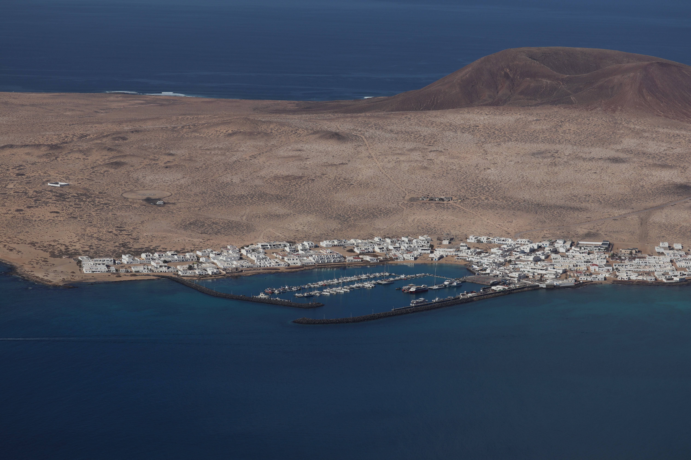
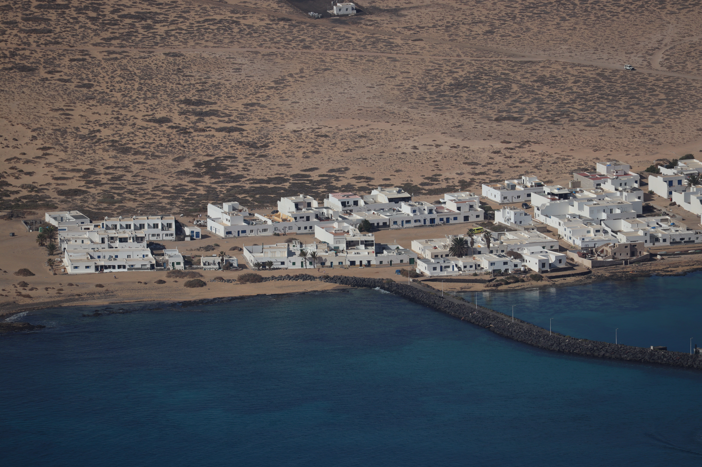
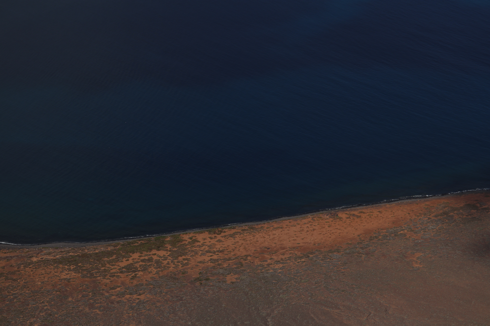
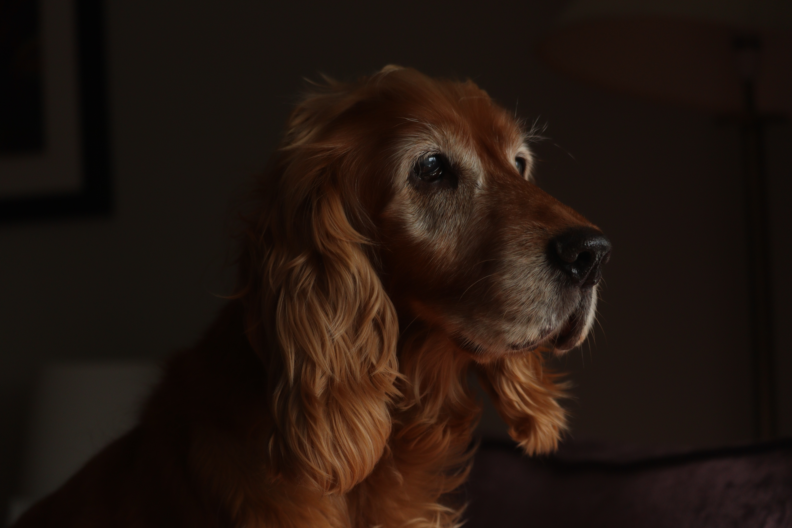
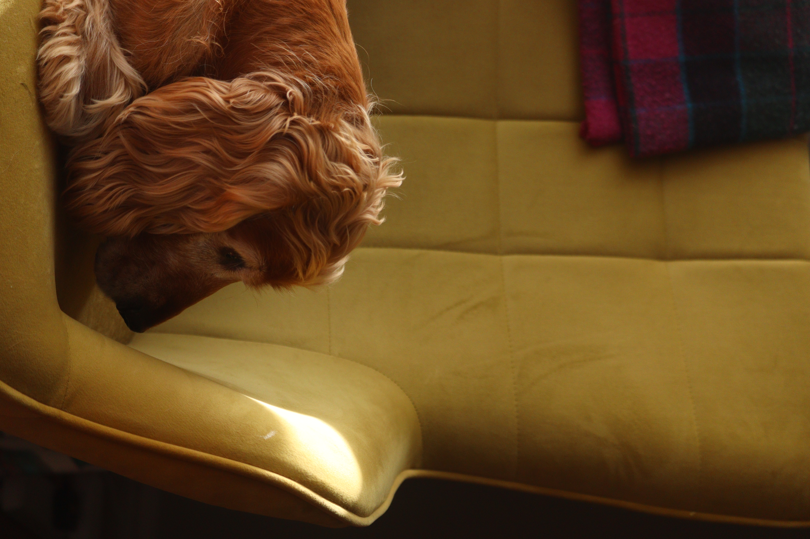
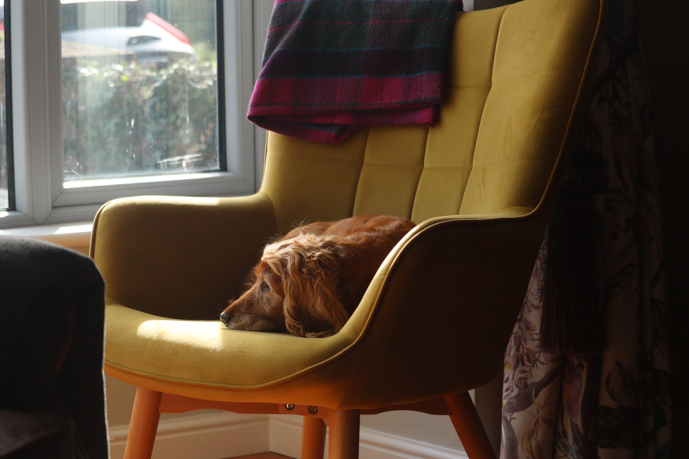
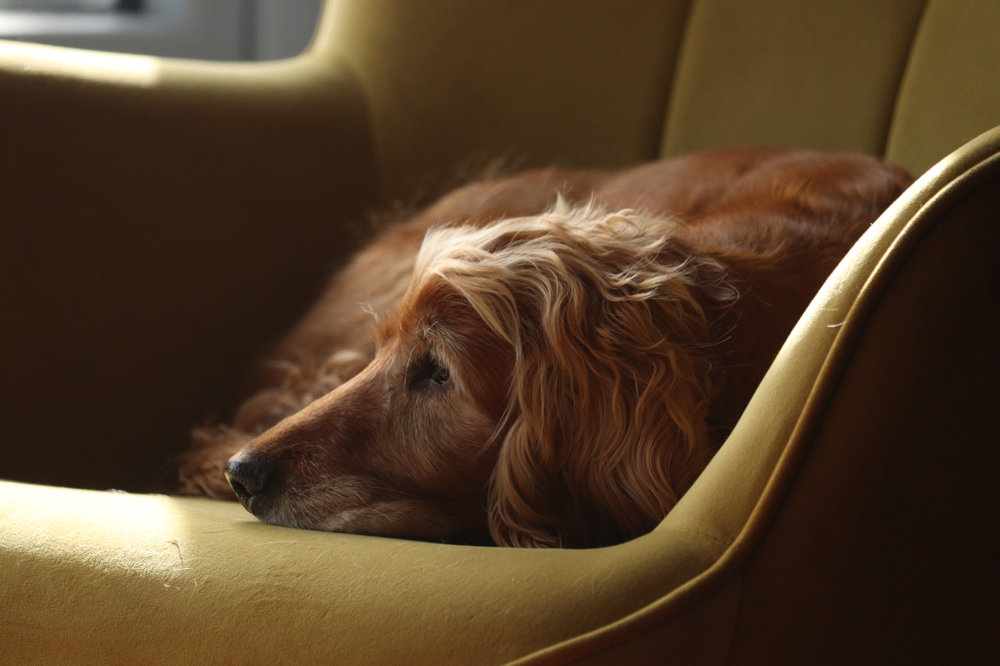

Welcome!
Videographer | Photographer | Video Editor | Graphic Designer | Web Developer
I’m Aoibhín McKenny, a final-year Media Studies and Computer Science student at Maynooth University. I’m passionate about storytelling through film, photography, and digital media. Explore my projects below to see how I combine creativity and technology in my work.
About Me
I'm a final year Media Studies and Computer Science student at Maynooth University, aspiring to work in film and digital media production. I have a strong passion for cinema and video editing.
Through my academic work and personal projects, I've developed skills in video production, editing, photography, visual storytelling and web development. I’ve gained hands-on experience with Adobe Creative Suite, programming and video production, developing strong creative problem-solving and critical thinking skills.
I really love photography and I enjoy taking photos in my spare time. Recently, I started some film photography which has been an incredible and rewarding experience. Scroll down to see some of my photos.
I’ve also started exploring web development and have designed and developed this portfolio website. I really enjoy projects such as this one, where I can combine my creative and technical skills.
I enjoy working both independently and collaboratively and am always looking for new opportunities to grow my skills and challenge myself creatively.
Photos







Gallery
My Projects
Inishbofin
Video Project
I filmed and edited a video project capturing the scenery and life of Inishbofin as part of a Multimedia Technology module.
Inishbofin is a small island off the coast of Connemara, County Galway, with a population of around 180 inhabitants. The goal of this piece was to create a relaxing, atmospheric video that showcase’s the Island’s natural beauty and peaceful environment.
I shot all the video footage and images used in the project and edited them using Adobe Premiere Pro and After Effects. Most of the ambient sounds used in the video were recorded by me on the island including waves crashing, wind and a camera shutter.
You can watch the final project below or read more about the details of the project here.
Spirits in the Night
Documentary
“Spirits in the Night” is an 8-minute documentary exploring the life of Irish poet Patrick Kavanagh and the controversy surrounding his grave.
I developed the concept for this documentary and wrote a proposal, which was then selected by my lecturer for production.
As part of the group project, I contributed to the planning and organisation of the project. I visited the filming locations in advance and took photos to plan shots. During production, I filmed some of the b-roll footage, helped set up lighting, and worked collaboratively with my group to ensure smooth shooting.
I edited the full documentary in Avid Media Composer, managing over 2 hours of footage to create a concise and engaging 8-minute film.
Lecturer Feedback:
Documentary Proposal: 93%
Final Documentary: 86%
Ted
Short Film
As part of a group project, I contributed to the development, production, and post-production of our first shout film, “Ted”. I helped come up with the concept and with writing the script.
During the pre-production, I organized locations, cast and sourced props. I helped come up with some shot ideas and I worked closely with my team during production visualising the framing and composition of the shots.
In post-production, I edited the film using Adobe Premiere Pro. I managed colour grading, sound design, and music, while working closely with my team to ensure our project stayed true to our vision.
Result: 90%
Podcast
Media and Cultural Work Assignment
As part of a group assignment for our Media Studies course, we had the opportunity to produce a podcast. I worked as the researcher and scriptwriter for the scripted segments of the podcast. I conducted in-depth research and scripted a conclusion that linked the discussion back to key readings from our Media and Cultural Work module.
I also designed a podcast cover using Adobe Express. This cover is featured in a custom-built audio player that I developed using HTML, CSS and JavaScript. I used this player to integrate the podcast into my portfolio website, ensuring it aligned with the overall design.
0:00
0:00
Live Brief
Media and Cultural Work Assignment
As part of a group project, we were tasked with developing and pitching a creative campaign to grow the audience of emerging Irish artist Kate Prendergast.
Our idea centred around visual storytelling and audience interaction, combining Spotify canvas, with the live concert experience.
We proposed the idea of giving disposable cameras to audience members at live gigs, collecting them afterwards, and using the photos to create textured paper visuals for use across Spotify Canvas and social media. This aimed to create a more authentic and engaging connection between the artist and her audience.
I introduced the idea of using film, inspired by Kate’s authentic and natural aestheic and her reference to a 1960’s, Bob Dylan style look that she liked. I researched this era and style and thought the best way to replicate this aesthetic would be to shoot on genuine film to achieve a raw, organic and natural look.
I introduced the idea of using Spotify Canvas to the group. I researched engagement statistics and explored how Canvas could visually connect Kate’s aesthetic to her music, enhancing the listener experience.
I also created a visual for our presentation using Adobe Illustrator, helping to clearly communicate our campaign concept and making the pitch visually engaging for the client.